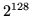

Next: Description of Mercy
Up: Mercy: a fast large Previous:
Avalanche and certificational
weaknesses
Mercy design goals
Mercy is a new randomised block cipher accepting a 4096-bit
block, designed specifically for the needs of disk sector
encryption; it achieves significantly higher performance than
any large block cipher built using another cipher as a
primitive, or indeed than any block cipher that I know of large
or small.
It accepts a 128-bit randomiser; it is expected that the
sector number will be used directly for this purpose, and
therefore that most of the randomiser bits will usually be
zero. This is also known as a ``diversification parameter'' in
the terminology of [6],
or ``spice'' in that of [19]. This last term avoids the
misleading suggestion that this parameter might be random and
is convenient for constructions such as ``spice scheduling''
and ``spice material'' and is used henceforth.
Mercy's keyschedule is based on a CPRNG; the sample
implementation uses [10].
Though [10] takes a
variable length key, Mercy does not aspire to better security
than a cipher with a fixed 128-bit key size, so it's convenient
for the purposes of specifying these goals to assume that the
key is always exactly 128 bits.
-
Security: Any procedure for
distinguishing Mercy encryption from a sequence of  independent random
permutations (for the possible spices) should show no more
bias towards correctness than a key guessing attack with the
same work factor. However, we do not claim that ignorance of
the spice used would make any attack harder; it's not
intended that the spice be hidden from attackers. For this
reason, Mercy is not intended to be a K-secure or hermetic
cipher in the terminology of [7].
-
Resistance to specific attacks: Mercy is
designed to be resistant in particular to linear and
differential attacks, as well as to avoid the certificational
weakness of Section 2.
-
Speed: Encryption and decryption should
be much faster than disk transfer rates, even with fast disks
and slow processors. Specifically, they should be faster than
20 Mbytes/sec on a relatively modest modern machine such as
the author's Cyrix 6x86MX/266 (which has a clock frequency of
233 MHz). This translates as under 11.7 cycles/byte, within
the range of stream ciphers but well outside even the fastest
traditional block cipher rates. The current C implementation
of Mercy achieves 9 cycles/byte; it is likely that an
assembly implementation would do rather better.
-
Memory: The cipher should refer to as
little memory as possible, and certainly less than 4kbytes.
In many environments, Mercy's keytables will be stored in
unswappable kernel memory; more important however is to
minimise the amount of Level 1 cache that will be cleared
when the cipher is used. 1536 bytes of storage are used.
-
Simplicity: Mercy is designed to be
simple to implement and to analyse.
-
Decryption: Decryption will be much more
frequent than encryption and should be favoured where there
is a choice.
Next: Description of Mercy
Up: Mercy: a fast large Previous:
Avalanche and certificational
weaknesses
mercy@paul.cluefactory.org.uk